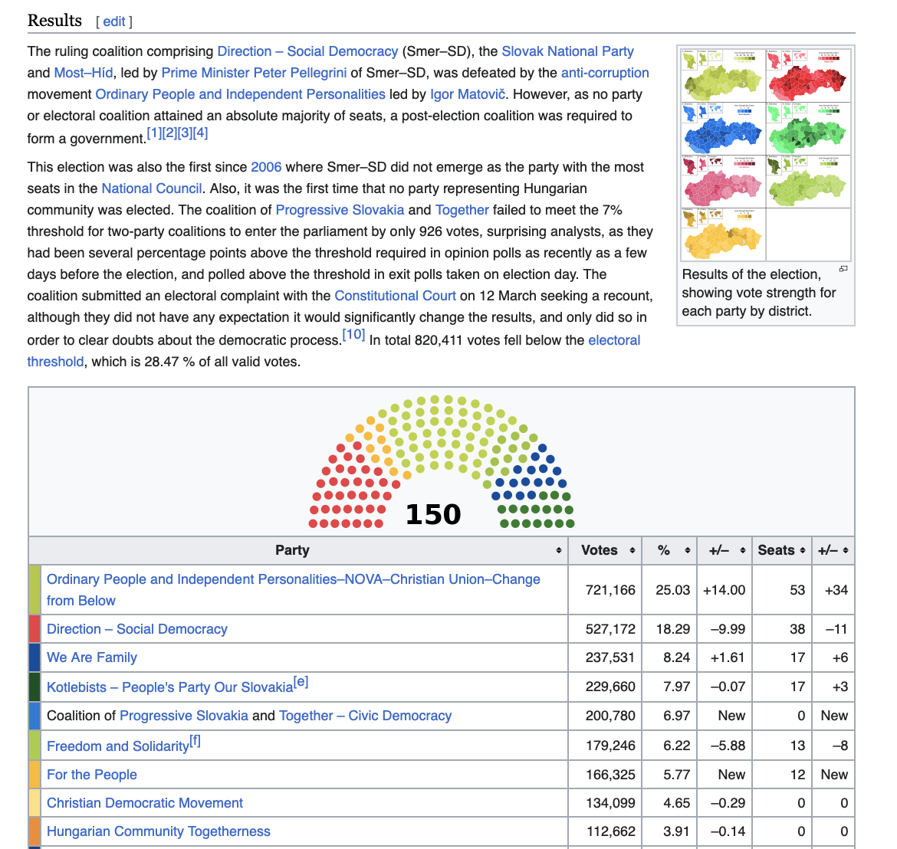
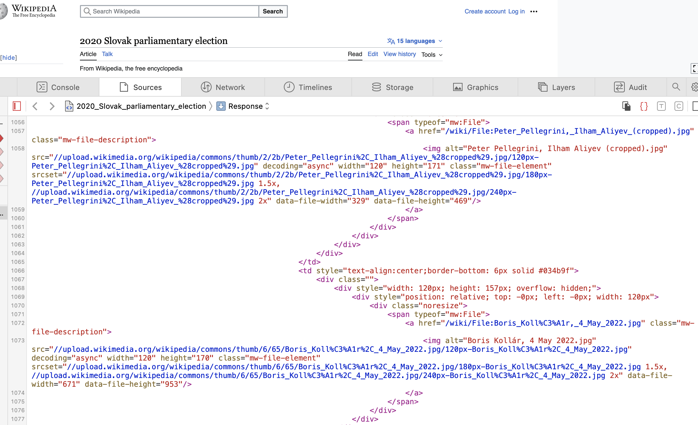
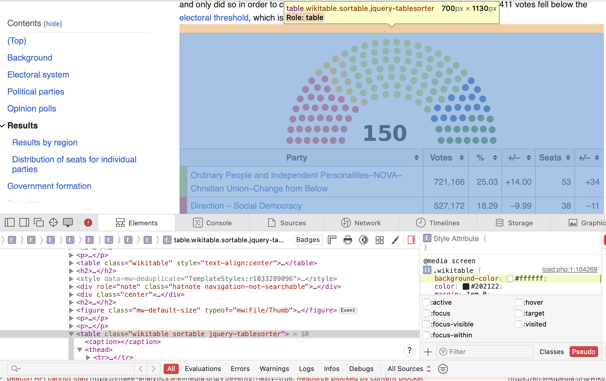

Screenscraping
Lecture: Jan Zilinsky
Summer Institute in Computational Social Science in Munich, 2023
What is screen-scraping?
Retrieving information and processing it to make it human-readable
What we will do today
- Scrape a messy table from Wikipedia
- Scrape a set of URLs from a blog
- Scrape and store text of blog posts
Preliminaries
Verify whether site-owners allow scraping:
- check
robots.txtfile - check terms of service
- communicate with responsible persons
Screen-scraping as a last resort?
- Modern web designs make scraping difficult
- Elements you care about will often be nested deeply within html files
- Websites change all the time (or disappear)
Screen-scraping with R
Install and load R packages
- Ensure the necessary packages are installed
- tidyverse for data manipulation
rvestfor reading websites into R:
- Then load all
tidyversecore packages andrvest:
First example - scraping a wikipedia page
We are going to scrape this table from Wikipedia:
Human-readable vs machine-readable
Store the full page
Passing the url as a character (string) using the rvest function read_html():
Returns an html_document containing the content of:
<head>tag (page metadata, mostly invisible to the user)<body>tag (the content of the page that is visible to the user)
View the content of the object
{html_document}
<html class="client-nojs vector-feature-language-in-header-enabled vector-feature-language-in-main-page-header-disabled vector-feature-sticky-header-disabled vector-feature-page-tools-pinned-disabled vector-feature-toc-pinned-clientpref-1 vector-feature-main-menu-pinned-disabled vector-feature-limited-width-clientpref-1 vector-feature-limited-width-content-enabled vector-feature-zebra-design-disabled vector-feature-custom-font-size-clientpref-disabled vector-feature-client-preferences-disabled" lang="en" dir="ltr">
[1] <head>\n<meta http-equiv="Content-Type" content="text/html; charset=UTF-8 ...
[2] <body class="skin-vector skin-vector-search-vue mediawiki ltr sitedir-ltr ...Parsing HTML
Think of HTML as a tree

Finding the relevant table
- Open the page in your browser.
- Right click on the page, select
Inspect(may be called something else in your browser, e.g.,display source code) or use CTRL+I shortcut. This should display the HTML structure of the webpage - Explore the structure of the file.
- Find the element(s) you want to scrape.
- Assuming you already have an html_document stored in your environment, try extracting the element with
html_elements(). - Extract the text (
html_text()) or data (html_table()) or attribute (html_attr()) you are interested in.
Note on step 5
html_element(x, …)
- x = either a document, a node set or a single node
- Then supply one of CSS or xpath depending on whether you want to use a CSS selector or XPath 1.0 expression
Parsing HTML
Inspect tool:
swk_wiki_section <- html_element(svk2020_html,
xpath = '//*[@id="mw-content-text"]/div[1]/table[3]')
head(swk_wiki_section)$node
<pointer: 0x10cb04d40>
$doc
<pointer: 0x10ca3b250># A tibble: 32 × 7
`` `` `` `` `` `` ``
<chr> <chr> <chr> <chr> <chr> <chr> <chr>
1 "Party" Party Votes % +/– Seats +/–
2 "" Ordinary People and Independent Person… 721,… 25.03 +14.… 53 +34
3 "" Direction – Social Democracy 527,… 18.29 –9.99 38 –11
4 "" We Are Family 237,… 8.24 +1.61 17 +6
5 "" Kotlebists – People's Party Our Slovak… 229,… 7.97 –0.07 17 +3
6 "" Coalition of Progressive Slovakia and … 200,… 6.97 New 0 New
7 "" Freedom and Solidarity[f] 179,… 6.22 –5.88 13 –8
8 "" For the People 166,… 5.77 New 12 New
9 "" Christian Democratic Movement 134,… 4.65 –0.29 0 0
10 "" Hungarian Community Togetherness 112,… 3.91 –0.14 0 0
# ℹ 22 more rowsLet’s extract only the relevant rows and columns
# A tibble: 24 × 3
`` `` ``
<chr> <chr> <chr>
1 Ordinary People and Independent Personalities–NOVA–Christian Uni… 721,… 25.03
2 Direction – Social Democracy 527,… 18.29
3 We Are Family 237,… 8.24
4 Kotlebists – People's Party Our Slovakia[e] 229,… 7.97
5 Coalition of Progressive Slovakia and Together – Civic Democracy 200,… 6.97
6 Freedom and Solidarity[f] 179,… 6.22
7 For the People 166,… 5.77
8 Christian Democratic Movement 134,… 4.65
9 Hungarian Community Togetherness 112,… 3.91
10 Slovak National Party 91,1… 3.16
# ℹ 14 more rowsIssue: missing column names
Add variable names
# A tibble: 24 × 3
Party Votes Percent
<chr> <chr> <chr>
1 Ordinary People and Independent Personalities–NOVA–Christian U… 721,… 25.03
2 Direction – Social Democracy 527,… 18.29
3 We Are Family 237,… 8.24
4 Kotlebists – People's Party Our Slovakia[e] 229,… 7.97
5 Coalition of Progressive Slovakia and Together – Civic Democra… 200,… 6.97
6 Freedom and Solidarity[f] 179,… 6.22
7 For the People 166,… 5.77
8 Christian Democratic Movement 134,… 4.65
9 Hungarian Community Togetherness 112,… 3.91
10 Slovak National Party 91,1… 3.16
# ℹ 14 more rowsFix variable type
CSS selectors as alternative to XPath
- One alternative for XPath is the use of CSS selectors
- Selector Gadget is an interactive tool for finding CSS selectors
- The idea of selector gadget is to select elements that you want to scrape and to copy the corresponding css selector
Example: Marginalrevolution.com
Using the CSS selector in R
Steps:
- parse web page
- choose nodes by css selector
- extract links via attribute (href)
MR <- "https://marginalrevolution.com"
MR_html <- read_html(MR)
elements <- html_elements(MR_html, css = 'h2.entry-title') # this used to be html_node()
nodes <- html_node(elements,"a")
urls <- html_attr(nodes, "href")
urls[1:3][1] "https://marginalrevolution.com/marginalrevolution/2023/09/the-importance-of-mentorship.html"
[2] "https://marginalrevolution.com/marginalrevolution/2023/09/friday-assorted-links-436.html"
[3] "https://marginalrevolution.com/marginalrevolution/2023/09/patience-and-educational-achievement.html"Same result, less code
[1] "https://marginalrevolution.com/marginalrevolution/2023/09/the-importance-of-mentorship.html"
[2] "https://marginalrevolution.com/marginalrevolution/2023/09/friday-assorted-links-436.html"
[3] "https://marginalrevolution.com/marginalrevolution/2023/09/patience-and-educational-achievement.html"
[4] "https://marginalrevolution.com/marginalrevolution/2023/09/thursday-assorted-love-links.html"
[5] "https://marginalrevolution.com/marginalrevolution/2023/09/the-rise-of-and-demand-for-identity-oriented-media-coverage.html"
[6] "https://marginalrevolution.com/marginalrevolution/2023/09/pharmaceutical-externalities.html"
[7] "https://marginalrevolution.com/marginalrevolution/2023/09/modern-principles.html"
[8] "https://marginalrevolution.com/marginalrevolution/2023/09/my-excellent-conversation-with-lazarus-lake-ultra-marathons.html"
[9] "https://marginalrevolution.com/marginalrevolution/2023/09/wednesday-assorted-links-419.html"
[10] "https://marginalrevolution.com/marginalrevolution/2023/09/robert-barro-and-rachel-mccleary-to-heritage.html"
[11] "https://marginalrevolution.com/marginalrevolution/2023/09/median-voter-theorem-again.html"
[12] "https://marginalrevolution.com/marginalrevolution/2023/09/the-british-ban-on-bully-dogs.html"
[13] "https://marginalrevolution.com/marginalrevolution/2023/09/what-explains-educational-polarization-among-white-voters.html"
[14] "https://marginalrevolution.com/marginalrevolution/2023/09/tuesday-assorted-links-434.html"
[15] "https://marginalrevolution.com/marginalrevolution/2023/09/what-government-shutdown.html" Extracting texts from articles
The following code takes an url as an input and returns the corresponding text:
"https://marginalrevolution.com/marginalrevolution/2023/07/when-is-best-in-life-to-read-or-reread-many-of-the-greatest-classic-novels.html" %>%
read_html() %>%
html_nodes('div.entry-content') %>%
html_text()[1] "\n First of all, and most of all, read them when you are young (teens and 20s) so they can still influence the longer trajectory of your life!\nBut let’s say you are past that point. It seems to me an optimal amount of waiting is in order. You want at least one of your rereads to come at the near-peak of your knowledge, understanding, and emotional development. So age 60 might be better than age 47, if only to maximize appreciation?\nI suspect that at age 80 you have lost a bit too much emotional energy to appreciate them as much as possible? But that is debatable, and perhaps for some people that point sets in before age 60.\nMost generally, another reread is usually a good idea, no matter what your age.\nShould you spread those rereads out over time, or is there a case for bunching at a single mini-era in your life?\nIn London and Siena I have been rereading Thomas Hardy’s 1878 Return of the Native, Hardy of course being one of the all-time greats.\n\n "Use the variable we have stored earlier and select one element
[1] "\n That is the topic of my latest Bloomberg column, here is one excerpt:\nEconomists have once again entered the fray, this time with a study that tries to determine how patience is correlated with better educational outcomes. The results are impressive, albeit unsettling. In Italy, differing degrees of patience account for two-thirds of the achievement variation across the country’s regions. In the US, differing degrees of patience account for one-third of the variation in educational outcomes across states, a smaller amount but still notable.\nBefore I go any further, you might be wondering which are the most patient states. They are (in alphabetical order) Maine, Montana, Vermont and Wyoming. The least patient state? California. In Italy, patience is highest in the northern region bordering Austria, which has a relatively Germanic culture and history. Patience is the lowest by far in Sicily. In both Italy and the US, patience is generally greater in the North than in the South.\nThese results do not necessarily mean that lower patience results in lower grades. It could be that doing well in school makes you more patient, because you learn that working hard has its own rewards, and that may lengthen your time horizon. Or there may be some underlying factor, say conscientiousness, that is key to both patience and academic achievement.\nStill, it is hard to avoid the overall impression that there is a tight connection between certain “bourgeois virtues” and academic achievement. If you are a parent, you might want to be rooting for your child to be more patient rather than less, no matter how complex all the interrelationships among the various personal and cultural attributes may turn out to be.\nThe researchers estimated patience by an ingenious method. There is already a widely accepted global preference survey that measures patience across nations. They then used Facebook data on interests, clicks and likes to see which interests were most popular in the more patient nations. Then they examined that data to see how popular those interests were in the various regions of those countries.\n\nHere is the underyling research by Eric A. Hanushek, Lavinia Kinne, Pietro Sancassani, and Ludger Woessmann. I do consider whether “patience” is exactly the right word for what is going on here. Hat tip also to The Wisdom of Garett Jones.\n\n "Looping over news articles
We could further automate the process of visiting each url and extracting the texts of articles.
If everything else fails: browser automation
- If you cannot process HTML, an alternative solution could be browser automation
- Read about RSelenium: https://cran.r-project.org/web/packages/RSelenium/
When should you use screen-scraping?
- Typically, APIs would be preferred
- But screen-scraping can be useful in some situations